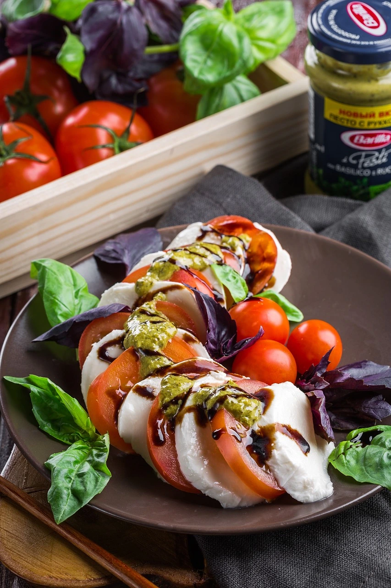

Recipe Description
In artist Filippo Tommaso Marinetti' his “Manifesto of Futurist Cuisine” he criticized pasta dishes because they were too thought out. So in the 1920s, during a stay in Capri, the carb-free plate of Caprese salad appeared on the menu for the first time.
- Prep time - 5 Minutes